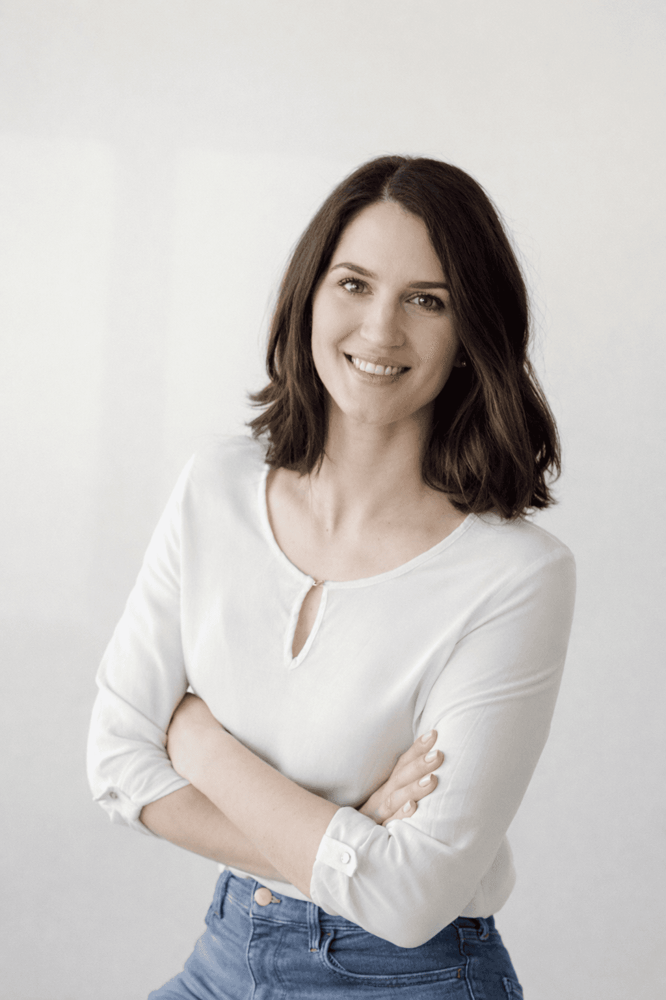

O meni
Večina ljudi ne potrebuje več informacij. Potrebuje prostor, da lahko jasno razmisli.

Sem Tea, coachinja in podjetnica, predvsem pa ženska in mama. V svoji karieri sem delovala v okoljih, kjer so odločitve pomembne, odgovornost velika in odnosi kompleksni. Prav tam sem od blizu spoznala, kako hitro lahko jasnost zamegli pritisk - in kako dragocen je prostor za premišljen razmislek.
Vedno me je zanimalo, kaj ljudi zares premakne, ne le navzven, ampak navznoter. Kaj ustvarja notranjo stabilnost, iz katere lahko delujemo bolj zrelo.
Moj pristop
Coaching zame ni svetovanje, temveč strukturiran proces razmisleka.
Ustvarjam varen, a zahteven prostor, kjer raziščeš širšo sliko - odnose, dinamike in svoje vzorce odločanja. Verjamem, da ima vsak človek v sebi vse vire in odgovore, včasih potrebujemo le prisotnost in jasnost, da jih prepoznamo.
Moje delo temelji na poslušanju, natančnih vprašanjih in spoštovanju tvojega procesa. Cilj ni hitra rešitev, temveč zrela odločitev.
Moja pot
Skozi svojo kariero sem opravljala in opravljam različne vloge: pravnica, mediatorka, vodja ekip in podjetnica. Delo z ljudmi v zahtevnih situacijah me je naučilo, da sprememba ni stvar motivacije, temveč razumevanja.
Iz teh izkušenj je naravno zrasla moja pot v coaching - kot nadaljevanje zanimanja za odnose, odgovornost in razvoj potenciala.
Moj pristop pa ne oblikujejo le profesionalne izkušnje, temveč tudi moja vloga žene in mame, kjer se vsak dan znova učim, kako pomembni so prisotnost, razumevanje in prostor za resničen premislek.
Izobrazba in certifikati
- NLP Mojster Praktik & Coach (INLPTA)
- Life Coach Practitioner (Academy of Applied Psychology)
- Mediator (Inštitut za mediacijo Concordia)
Coaching akreditacije
- Organizacijska coachinja (Kreativlab d.o.o.)
- EIA EMCC - individualna akreditacija
- ACC ICF - v pridobivanju
Vrednote, ki me vodijo
Prisotnost
V vsakem srečanju sem polno zbrana, pozorna in odprta. Verjamem, da se spremembe začnejo takrat, ko se človek res počuti slišanega.
Rast
Ne ponujam rešitev namesto tebe. Verjamem, da že nosiš v sebi vse odgovore. Jaz sem tu, da ti pomagam, da jih (ponovno) odkriješ.
Zaupanje
Temelj coachinga je iskrenost in spoštovanje meja. Tvoja izkušnja je tvoja, jaz sem tu, da jo podpiram brez sodbe.